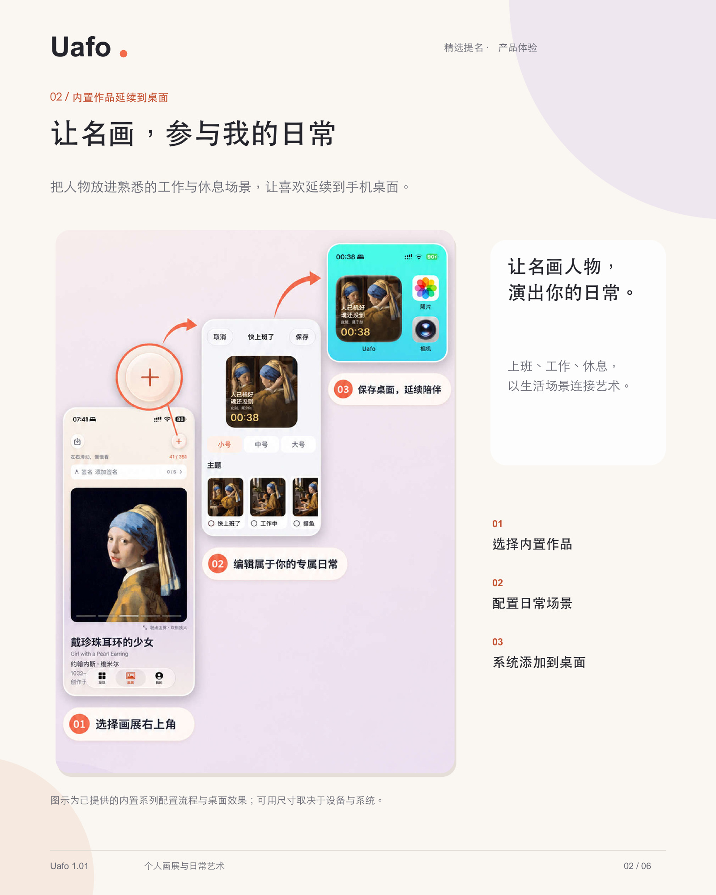
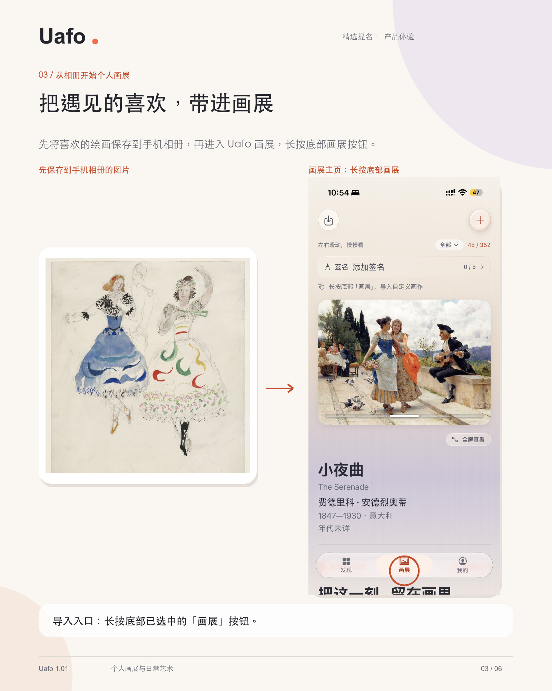
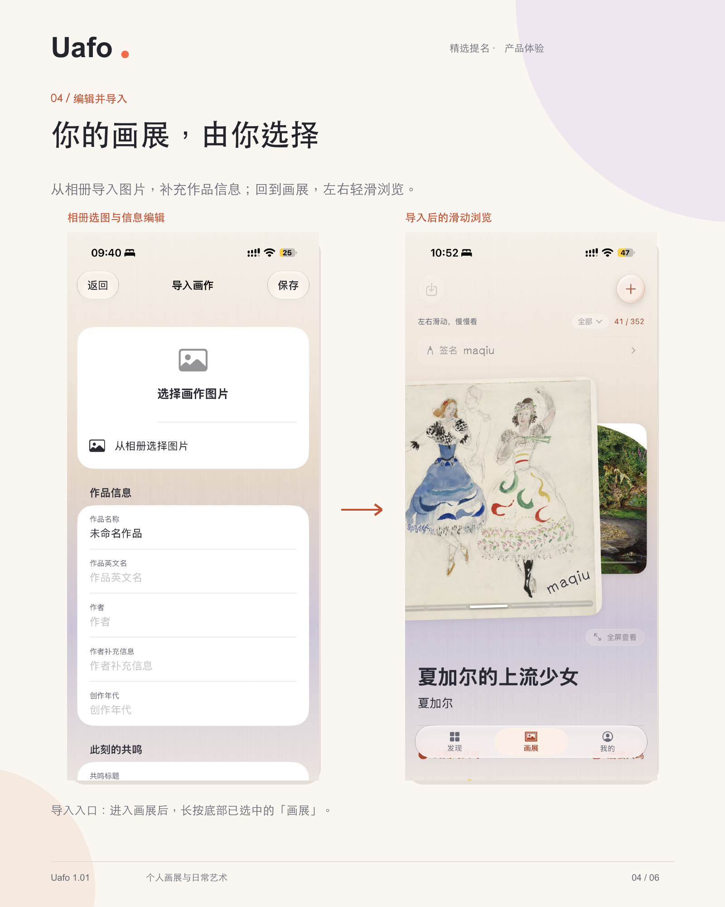
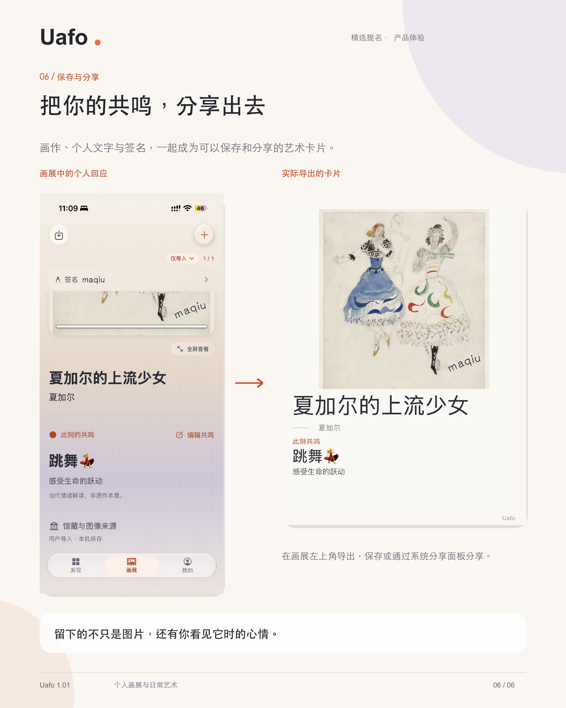

先看精选画作，让喜欢陪伴日常。
浏览默认内置的作品，点击右上角“＋”进入关联小组件系列，编辑保存后添加到桌面。
先浏览内置精选画作，让喜欢的艺术通过关联小组件陪伴日常。再把自己遇见的绘画保存到相册、导入个人画展，写下共鸣、留下签名，分享自己的艺术卡片。
浏览默认内置的作品，点击右上角“＋”进入关联小组件系列，编辑保存后添加到桌面。
先将图片保存到手机相册，再长按画展页底部已选中的“画展”，选图并编辑作品信息。
导入后左右滑动，或筛选“仅导入”。编辑共鸣、添加签名，再从左上角导出艺术卡片。
按实际使用顺序阅读：内置名画与小组件 → 相册保存与长按导入 → 编辑和滑动浏览 → 共鸣与签名 → 卡片分享。点击图片可查看大图。




网站和 PDF 使用相同顺序。图片和 PDF 均可直接打开，无需登录。